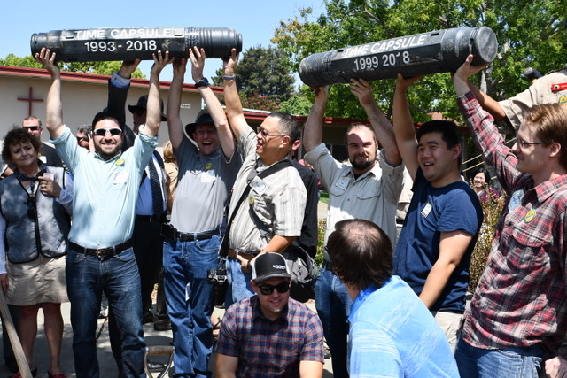

On Saturday August 18, 2018, Boy Scout Troop 463 celebrated its 50 years of scouting. Founded in 1968 and chartered by Trinity United Methodist Church in Sunnyvale, CA, the troop has enriched the lives of over 300 boys and their families. During the last 50 years, 63 boys have earned the rank of Eagle, and currently the troop has 28 scout members. Troop 463 is dedicated to enjoying a great time while teaching the scouts outdoor skills and leadership. The troop's philosophy is to have fun, learn skills, and be a better person through self-improvement.
About 200 current and alumni scouts, their family members, and prominent members of the Sunnyvale City Council and Boy Scouts Council gathered to celebrate the troop's 50th Anniversary. The celebration consisted of various scout-themed activities throughout the day. The scouts built the troop's famous 75-foot-long rope bridge. A continuous stream of photos taken during the troop events and outings during the last 50 years was presented throughout the day. Several past scouts reminisced about their time in the troop. Everyone enjoyed the adventurous stories of the past outings by Tim Thurgate who served as the Scoutmaster for eighteen years before handing the responsibility to Brian Davis last year. The celebration was uplifted by motivating speeches from the Mayor of Sunnyvale Glenn Hendricks, Sunnyvale Councilmembers Nancy Smith and Gustav Larsson, and BSA Council Commissioner Dave Adamski. They spoke about the values of scouting and the knowledge the scouts gain to become good citizens and leaders in the community, nation, and the world. They emphasized that the scouts learn skills that last a lifetime and develop good habits geared towards character development, citizenship, and personal fitness.
The highlight of the event was digging up and opening the Time Capsules that were buried 25 and 19 years ago set to be opened in 2018. The location of the second time capsule buried in 1999, secured in a concrete encasement, was well-known, but nobody knew the whereabouts of the 25-year-old capsule buried in 1993. For several weeks, the Time Capsule committee was hard at work trying to determine its location. Scouts went on a digging expedition wherever the alumni scouts "thought" or "remembered" the capsule to be, but the capsule's location remained a mystery. It was a pleasant surprise when the capsule revealed itself right below the 1999 capsule. Several alumni scouts were present who had saved their memories and messages in the 1993 capsule. They were elated to discover it! In 1999, Troop 463 sent this message to 2018: "The values of Scout Oath and Law will be as important in the future as they are today." Then, they put into the capsule their own predictions and hopes for the year 2018. They were right about their message to the future as the Scout Oath and Law continue to help instill the values of good conduct, respect for others, and honesty. The two capsules were opened, and the items were shared with everyone present. The items were then collected by their owners. What a treasure!!!
During the last 50 years, Troop 463 has developed its own traditions and themes. The scouts love to go on backpacking outings several times a year, including high-adventure trips and others that are appropriate for all levels of experience. Scouts of Troop 463 love to build big and to demonstrate their meticulous skills with knots and lashings. They traditionally build a giant tower during their campout with Webelos, gigantic water balloon catapults during Webelos Information Night, and an enormous rope bridge during WeST Fair which was featured for the 50th Anniversary. Troop 463 has maintained the tradition of its "cheer" as well. All current and past scouts marked this special occasion with the roaring Wadatchoo cheer.
To commemorate the 50th Anniversary, a celebratory pin was gifted to all attendees. The design of the pin was inspired by the troop's long-running neckerchief that captures the troop's focus and attitude: a simple yellow neckerchief with white fringe featuring the outdoor scene of trees and a campsite with troop's numbers written in Roman numerals displaying a balanced symmetry. Attendees sported the pins with pride throughout the day. A beautiful 50-year memory book was compiled and printed that chronicled the history of the troop, the past events, and the stories from past scouts.
Several prizes were donated by local stores and raffled to lucky winners. One of the raffle prizes was the troop's custom Class B shirt. Of course, to keep everyone energetic, delicious food and drinks were served throughout the afternoon. The scouts were eager to build a campfire in 86-degree heat while enjoying smores.
It took over ten months of elaborate planning and collaboration to fine-tune all the details of the event. All effort was made to ensure that every scout associated with the troop in the last 50 years was invited by mail, phone, or email. Announcements were made in public areas and social media, and most importantly, word of mouth spread among the current and past participants.
To all the attendees, thank you for gracing the occasion with your presence and congratulations for being part of a big milestone.
Gunjan GuptaParents Committee Chair
 |
 |  |